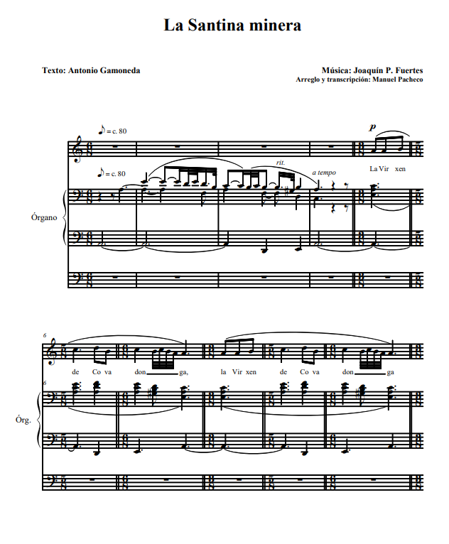

LA FORJA DE LA IDENTIDAD ASTURIANA
Todo comienza hace muchos siglos, nada menos que trece,
cuando un astur llamado Pelayo -unos dicen que de origen
romano, otros visigodo- se alza en un enclave rocoso y
de difícil acceso de la montaña para combatir contra Al
- Andalus. El bastión del norte, donde la tierra se
pierde en confines de los que no se alcanza a ver más
allá, defiende un territorio que ha de convertirse con
el paso del tiempo en Asturias. Llega, dice la tradición
convertida en Historia, la batalla de Covadonga, donde
Pelayo combate con pocos soldados, pero con heroicidad y
la ayuda divina, logra frenar a los musulmanes que,
derrotados, dejan esta tierra cantábrica. Y Pelayo se
alza como el primer rey de Asturias. Más allá de
conmemorarse ahora los 1.300 años de este hecho, lo que
es realmente importante es el sentimiento que aúna a
todos los asturianos en torno a él. Todos nos sentimos
asturianos, pertenecemos a un mismo lugar y compartimos
las mismas raíces y sentimientos cuando hablamos de
Pelayo o cuando cantamos a la Santina. Es la identidad
de nuestro pueblo. Cuando pensamos en lo que sucedió en
la montaña de Covadonga, hablamos también de la
naturaleza que tanto marca la vida de los asturianos, ya
sea en la mina, en la mar o en el prado. No en vano, el
obispo Pelayo definió -ya en el siglo XIII- a Asturias
como una tierra “entre el Eo y el Deva, entre la montaña
y el mar”, y está claro que esa imponente naturaleza
también marca nuestra identidad. Aunque los hechos se
desdibujen en el largo viaje a través los miles de años
transcurridos, su simbolismo sigue presente hoy en la
memoria colectiva. La batalla de Covadonga y Pelayo son
el punto de partida de lo que somos ahora. Por eso, este
proyecto pretende ser un viaje musical por toda esta
historia colectiva. Canción a canción, recordar quienes
somos y el carácter único de la esencia asturiana, lo
que sentimos como pueblo y cuya mejor expresión, o una
de las mejores dentro de la tradición cultural de
nuestra tierra, está expresada por la música. Emociones
que nos diferencian y nos unen.
PROYECTO ARTÍSTICO
El proyecto, aún en fase de desarrollo en alguno de sus
aspectos, está compuesto por una serie de textos de
canciones de diversos autores: Antonio Gamoneda (La
Santina minera), Pedro de Silva (En Covadonga el milagro),
Pablo García Baena (Aula Regia), Xuan Xoxe Sánchez Vicente
(El nacimientu del reinu, en fase de composición musical),
Luis del Val (Loa a Covadonga) y Fernando Álvarez (Agua de
la fuente clara). Estos textos están musicados por Joaquín
Pixán, quien los interpretará junto a un conjunto de
música de cámara. Manuel Pacheco, por su parte, ha
musicado Aula Regia. Las obras ya terminadas son las
siguientes:

LA SANTINA MINERA
Texto: Antonio Gamoneda
La Virxen de Covadonga (bis)
ta metía nuna cueva
y anda al.lumando les sombres
tal que si fuese minera.
Que los güeyinos
de la Santina
tamién al.lumen
al.lá ena mina.
Ya anden diciendo
munchos mineros
que trabayando
ven los l.luceros.
Ye seguro que la Virxen (bis)
madruga la madrugada
pa da-y avisu a los ánxeles (bis)
de que nun me pase nada
al.lá ena mina.
EN COVADONGA EL MILAGRO
Texto: Pedro de Silva
Pelayo busca la fuerza
En la vertical de agua:
Desplome de torrentera
Desde la nieve más alta.
Pelayo busca la fuerza
Donde la corte se acaba,
Hombres con carne irredenta
Y la memoria humillada.
Pelayo busca la fuerza
En los fondos de la rabia:
El alma, cuando la aprietan
Toma la forma de espada.
Pelayo busca la fuerza
Junto a la roca horadada:
Claustro materno de piedra
Bajo el verdor de una falda
Pelayo busca la fuerza
En la materia sagrada
Madre primordial de tierra
Señora de la montaña.
En Covadonga el milagro
No necesita palabras.
AULA REGIA
Texto: Pablo García Baena
Hiende el arca de piedra en travesía ignota
Las noches al vivac de estrellas y fogatas.
Junto al roble selvático de los campos astures
Ancla Santa María el solio de las preces.
Bajo el Cuerpo de Cristo hasta el salón de baile.
Se retiraron rudos y castos los feroces
Danzantes el albogue como un humo sagrado
Anidó en los sillares que labrara el destino.
Qué larga comitiva de asonadas y muerte
sentándose en oscuras escaleras de siglos.
Cansancio de los huesos hacia el fosal anónimo:
asperja en fina lluvia la rama de boj rauda.
Cuánta melancolía en los azules ojos
-el agua de las ágatas engastando los cofres-
Que otean aves libres en amoroso juego
Desde las torculadas columnas del solario.
Oculto en la maleza el oso de Favila.
LOA A COVADONGA
Texto: Luis del Val
Hay dos formas de llegar:
subir de pie o de rodillas.
Al final está la cueva y, en la cueva, la Santina.
Bajo la cueva, en la fuente,
brilla siempre calderilla
lanzada por unas mozas
que viven en soltería
y allí se quedan mirando
A esa imagen tan querida.
O rezan o es que hablan solas.
Y un deseo les germina:
las monedas, en el fondo,
en las aguas cristalinas
donde las mozas se miran
y, según la tradición,
en un año se enmaridan,
las que un esposo pidieron
a esta virxen pequeñina.
La Virxen de Covadonga, (bis)
de Asturias, la más querida
AGUA DE LA FUENTE CLARA
Texto: Fernando Álvarez
Agua de la fuente clara
agua de la fuente fría
agua del santo Auseva
agua de la Santina mía.
Corre por la ladera limpia
peregrina por la Cueva Santa
fluye por la fuente prometida
brota por la cola blanca.
Limpias el alma
lavas la herida
sacias al sediento
agua de la Santina mía
EL NACIMIENTU DEL REINU (en fase de composición musical)
Texto de Xuan Xoxé Sánchez Vicente
Al entamu la Edá Media allá en desiertu llonxanu,
Prenden incendios de fe,
Que cuerren con tantu agañu
Como la chispa en praos secos
Cuando afoguera’l veranu.
Dende l’altu de los puertos,
El moru mira con plasmu
La tierra desconocida
Qu’espera ribayu abaxu:
Per ella cuerren mil ríos
Qu’a mil valles abren pasu
Y en verde empapen el monte,
La sierra, la viesca, el llanu:
«Inxamás esta nación
Ablucó énte pueblu estrañu:
Nun pudieren visigodos
Ponenos xugu al costazu,
Nin entregamos tampoco
Tributos a rei estrañu;
Y al mesmu César Augustu,
El emperador romanu,
Costó-y sangre y costó-y años
Pisar el suelu asturianu.
Nun permitamos agora
Que l’invasor mauritanu
Siga nesta tierra nuestra
Semando roína y dañu.
Hacia oriente en retirada
Conduz la tropa Pelayu;
Ensin sosiegu, a la escontra
L’invasor sigue’l so rastru.
Nos tableros celestiales
Xueguen partides anguañu:
Los que lo pierdan enriba
Llorarán tamién embaxu.
Anque pequeña, galana,
Cuando sabe’l resultáu,
Ye tanta la so gayola
Que vien al suelu d’un bálamu.
Ánxeles na so rodiada
Vuélvenla en sí col so cantu.
Cimatarres y alfanxes
Xacen muertos sobre’l barru,
Los caftanes y turbantes,
Que rellumaben de blancu,
Son agora colcha roxa
Que se convierte en sudariu.
Bermeyu cuerre a la mar
El Sella per más d’un añu:
Dende entós los sos salmones
Tienen el color más altu.
Munchos sieglos fue’l so calce
Recordatoriu y osariu.
Ellí tuvo aniciu’l reinu
Del pueblu astur soberanu:
Al melgueru portugués,
Al gallegu roceanu,
Al salmantín y estremeñu,
Al meseteñu, al vascu,
Toos tuvo na so llingua,
A toos baxo’l so mantu.
Y cuando sieglos dempués
A Castiella cedió’l mandu
Un García vendepatries,
N’Abamia, onde enterráu
Reposaba’l frañador
Del moru, como un argayu
Sintióse una voz de rabia,
D’inritación y d’agayu:
«Traidor -decía la voz-
Engañador y canallu,
Que rendiste ensin batalla
Al mio pueblu asturianu,
El que siempre resistiera
A quien quiso esclavizalu».
") M. Bernardo y J. Pixán
M. Bernardo y J. Pixán
 Iñaki Santianes, Fernando Álvarez y J. Pixán
Iñaki Santianes, Fernando Álvarez y J. Pixán
 Alejandro Zabala, J. Pixán y Dietrich Bethge
Alejandro Zabala, J. Pixán y Dietrich Bethge